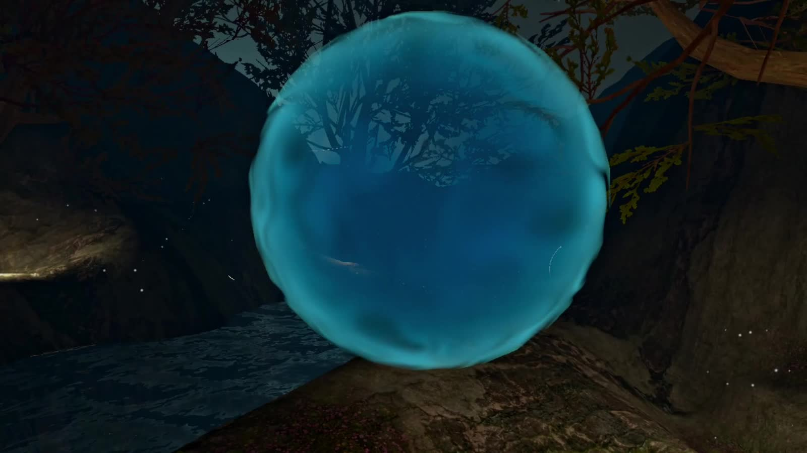

TrailerXR · WELLBEING
ProfessionalMindfulness
A VR mindfulness experience designed for everyone.
Unity · VR · Localization
My contribution
I developed the application logic and sound design, synchronized animations with the exercise timings, and handled localization. Controller-free interactions are in development; biometrics and breathing synchronization are potential future directions.